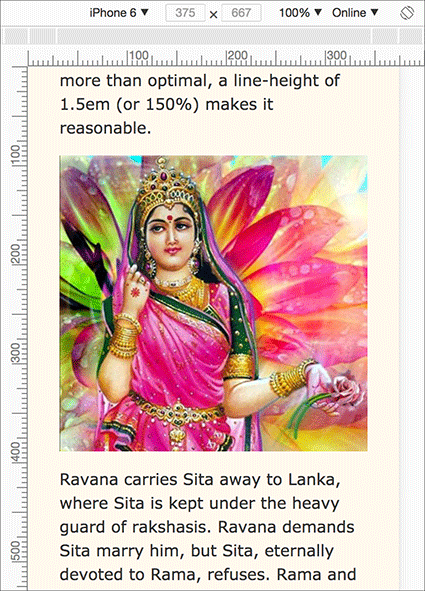

The idea here is to style a page so that it looks nice and is readable on devices of all sizes. Using flexible units of measurement in CSS (such as rem and percent), as well as max-width, makes this possible. Keep in mind the optimal line length for readability of the text. Depending on the font, a width of 700px yields a line length of about 80-90 characters with browser default settings. Although that is more than optimal, a line-height of 1.5rem (or 150%) makes it reasonable.
No media query is required here, because the CSS adapts to any screen size.
Below is a screenshot of the page as it would appear on an iPhone 6, rendered by Chrome Dev Tools.
index | GitHub
* Text adapted from Wikipedia entry Ramayana.